Overview
Hôm nay mình lại ngồi lướt lướt mấy cái dữ liệu sẵn có trên công ty để xem có gì hay ho không thì mình lại tìm được một chút kiến thức mới mẻ nên muốn note lại biết đâu sau này cần 😉.
Thông thường với mình khi đem dữ liệu sử dụng cho một project thì mình thường chỉ quan tâm đến các property, các object độc lập mà bỏ qua sự tương tác giữa các object ⇒ Khi đó câu hỏi đặt ra nếu dưới góc nhìn các object có sự tương tác với nhau thì mình có thể giải quyết được thêm những vấn đề nào?
Và rồi mình bắt đầu search google và tìm ra một tá những ứng dụng mà cần quan tâm đến sự tương tác giữa các objects. Ví dụ về facebook: khi đó mỗi user sẽ có tương tác với nhau thông qua relasionship: friend, family, ….Khi đó cơ chế suggestion friend của fb chính là ứng dụng mining relationship để đưa ra suggest cho user. Và tất cả các được biển diễn dưới dạng graphs hoặc networks. Dưới đây là tổng hợp một số ví dụ về graph, network trong thực tế:
Many types of Data are Graphs:
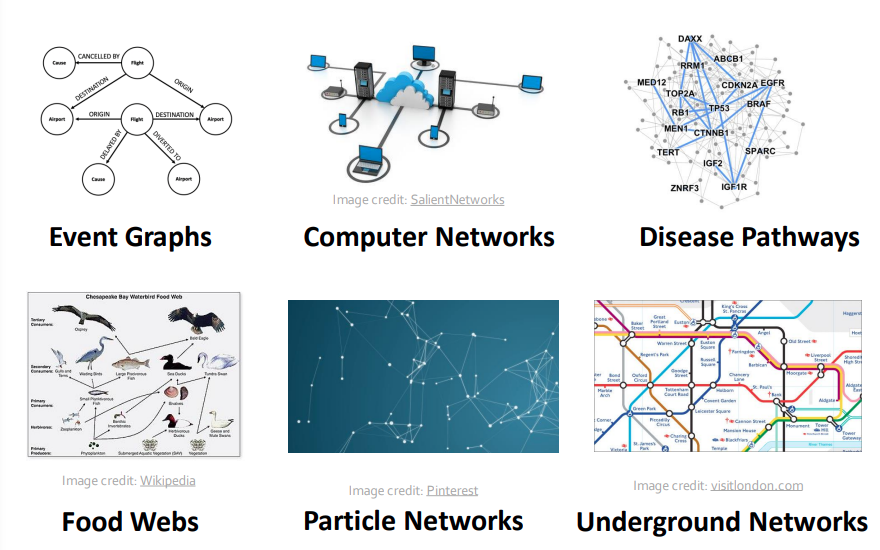
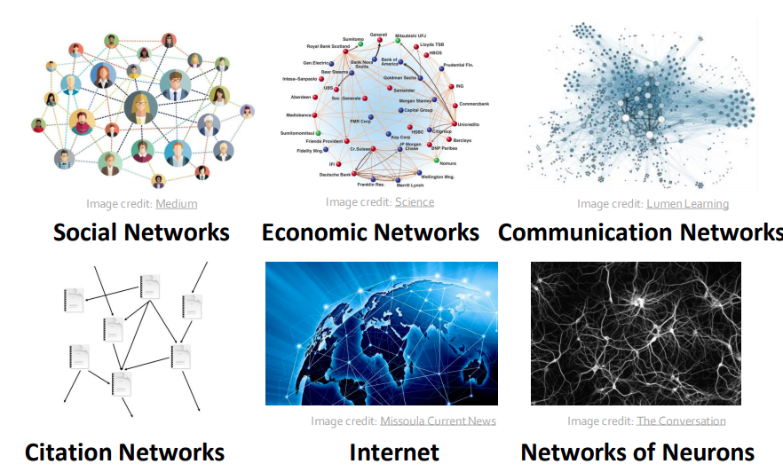
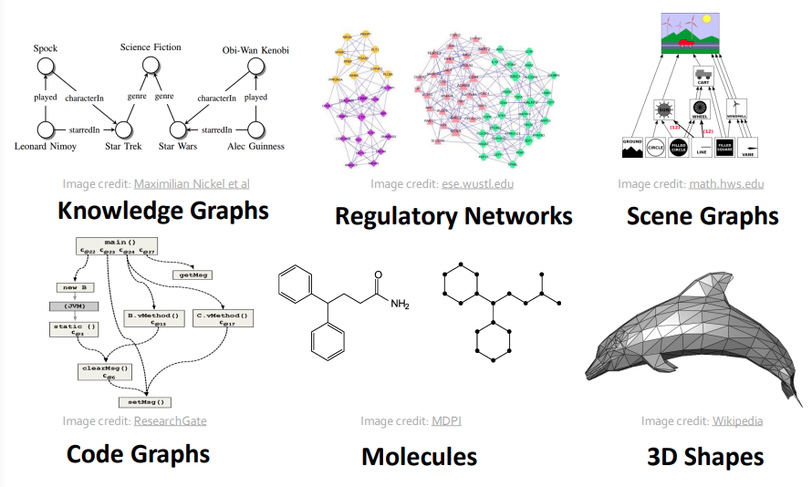
Source: https://web.stanford.edu/class/cs224w/slides/01-intro.pdf
Types of Networks and Graphs:
- Networks (Natural Graphs)
- Social networks:
- Society là một mạng lưới thu thập từ 7+ tỷ người dùng cá nhân
- Communication and transaction:
- Electronic devices, phone calls, financial trabsactions
- Biomedicine:
- Tương tác giữa genes/proteins
- Brain connections:
- Sự liên kết giữa hàng tỷ neurons
- Social networks:
- Graphs (as a representation)
- Information/knowledge được tổ chức và được kết nối
- Software có thể được đại diện như một graph
- Similarity networks: kết nối tương đồng giữa các data point
- Relational structures: Molecules, scene graphs, 3D shapes, particle-based physical simulation
Chúng ta thấy có hai thuật ngữ được nhắc đến là Networks và graphs vậy sự khác nhau giữa hai thuật ngữ này là gì? Chúng ta có thường nhầm lẫn networks và graphs? 🤔 (Cái này các bạn tự tìm hiểu nhé 😂).
Để giải quyết những bài toán này, người ta quan tâm đến Graph theory và cụ thể là ứng dụng machine learning cho graph (Graph Neural Networks) cho thấy sự phát triển mạnh mẽ của GNN mấy năm gần đây:
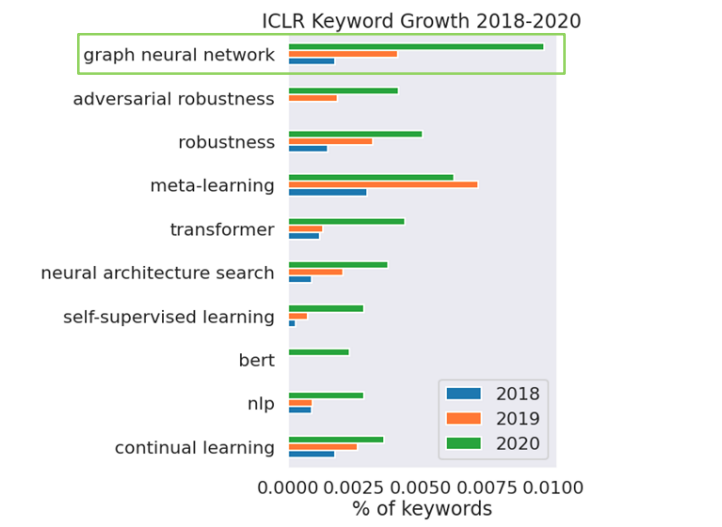
Chính vì sự phát triển mạnh mẽ của GNN trong thời gian gần đây và những ững dụng mạnh mẽ của nó trong thực tiễn mình quyết định bắt tay tìm hiểu nó (tìm hiểu bề nổi thôi nhé, vì để hiểu sâu thì graph theory là một cái gì đấy rất vi diệu mình khó có thể hiểu sâu sắc được 😎.)
Get Gooooo 😆😆😆!
Đối với các project về Graphs chúng ta sẽ chia nó làm 4 tasks chính:
- Node-level: Các task xoay quanh các node: phân loại, tái cấu trúc 3D, …
- Edge-level: Các task liên quan đến kết nối tương tác giữa các node, các bài toán recommender, …
- Community (subgraph) level: Các task detect community, cluster, ….
- graph-level prediction, graph generation
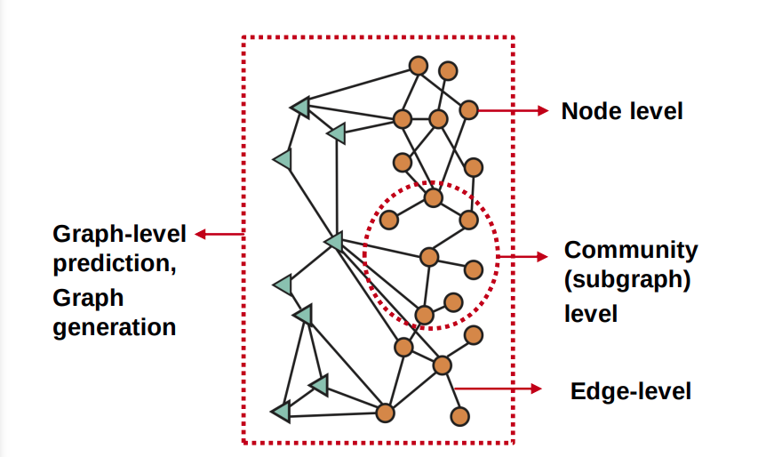
Classic Graph ML Tasks:
Node-level ML Task
- Node classification: dự đoán thuộc tính của một node.
- Example1: dự đoán một node trong network là user hay item.
Example2: Protein Folding: Computationally predict a protein’s 3D structure based solely on its amino acid sequence. Dựa trên chuỗi protein 1D hoặc 2D để predict cấu trúc 3D tự nhiên của protein.

Key idea: “Spatial graph”
- Nodes: amino acids in a protein sequence
- Edges: Proximity between amino acids (residues)
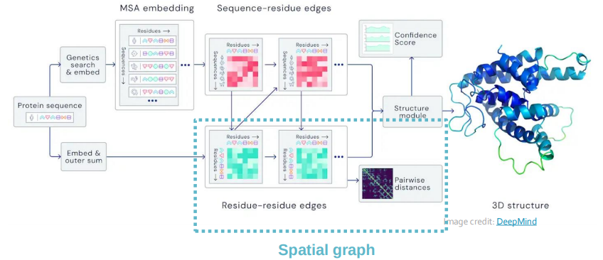
- Node classification: dự đoán thuộc tính của một node.
Edge-level ML Task
- Link prediction: dự đoán sự liên kết/tương tác của hai node bất kỳ trong network (link/edge mising)
- Example: dự đoán kết nối giữa người mua hàng và danh mục hàng hóa.
Recommender Systems:
- Người dùng tương tác với sản phẩm: xem phim, mua hàng, nghe nhạc, …
- Nodes: users, items
- Edges: user-item interactions
Mục đích gợi ý những sản phẩm mà người dùng có thể thích (có thể nâng cao hơn là gợi ý sản phẩm mà người dùng mong muốn vào thời gian thích hợp)
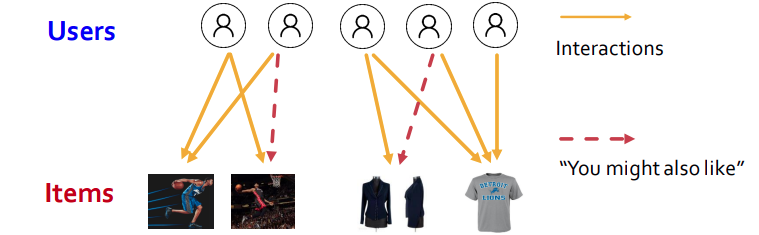
Drug side effects: Nhiều bệnh nhân sẽ dùng nhiều loại thuốc điều trị cùng một lúc (46% người trong khoảng từ 70-79 tuổi cần nhiều hơn 5 loại thuốc, khá nhiều bệnh nhân có bệnh về tim mạnh, thần kinh,… cần nhiều hơn 20 loại thuốc) Do đó người ta cần xác định sự tương tác giữa các loại thuốc có ảnh hưởng lên cơ thể như thế nào? Có những tương tác nào gây nguy hiểm cho cơ thể hay không?
👉 Task đối với bài toán này là đưa ra một cặp thuốc và dự đoán ảnh hưởng bất lợi lên cơ thể người dùng.
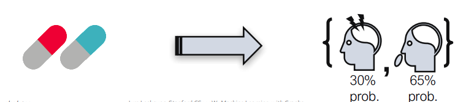
Biomedical Graph Link Prediction:
- Nodes: Drugs & Proteins
Edges: Drug-drug, drug-protein, protein-protein
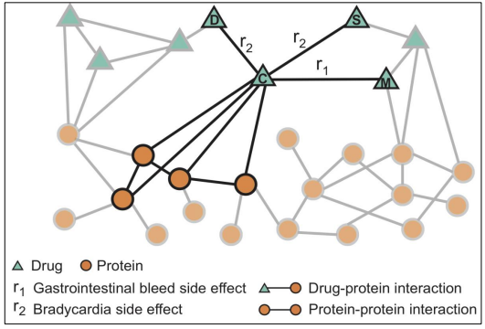
🧐 Câu hỏi đặt ra sẽ như thế nào khi hai loại thuốc được đặt cạnh nhau? liểu nó có phá vớ cấu trúc liên kết của các bắp cơ?
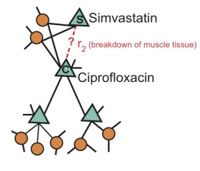
- Link prediction: dự đoán sự liên kết/tương tác của hai node bất kỳ trong network (link/edge mising)
Subgraph-level ML Task
Trafic Prediction:
- Nodes: Road segments
- Edges: Connectivity between road segments
- Prediction: Time of arrival (ETA)
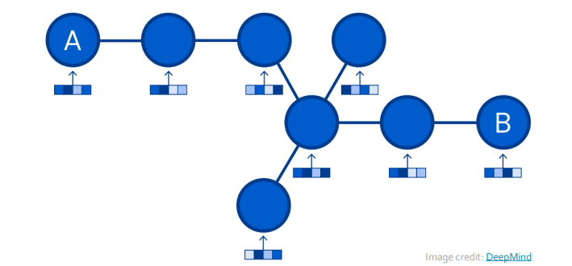
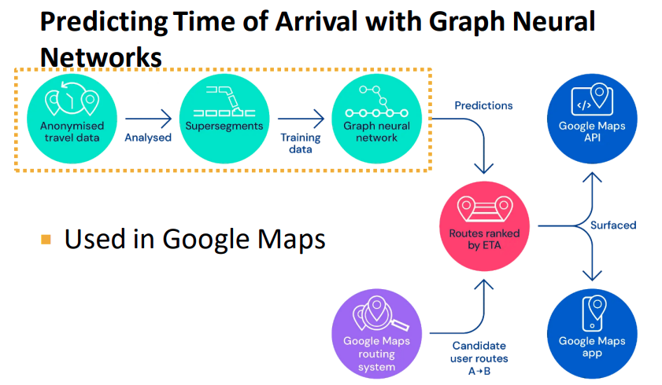
Graph-level ML Tasks
- Graph classification: : phân loại hợp chất hoá học (thuốc - thành phần cấu tạo)
- Clustering: xác định các node thuộc cùng một cộng đồng:
- Ví dụ: Social circle detection
Other tasks:
Graph generation: Drug dívovery
- Nodes: Atoms
Edges: Chemical bonds
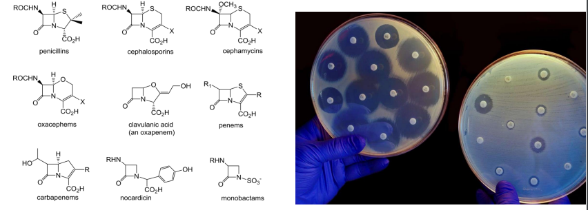
Graph evolution: Physical simulation
- Nodes: Particles
Edges: Interaction between particles
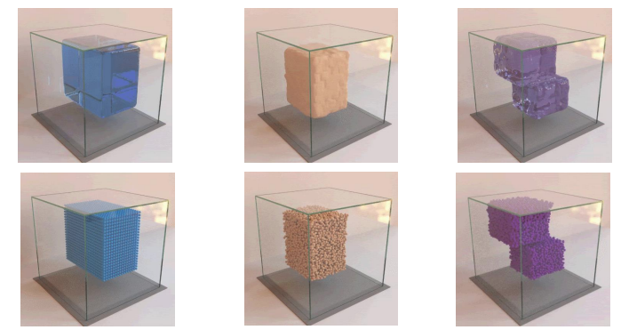
Components of a Network
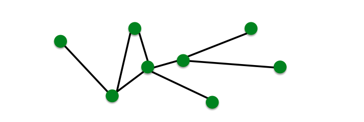
- Object: Nodes(N), Vertices(V)
- Interactions: Links, edges (E)
- System: network, graph G(N,E)
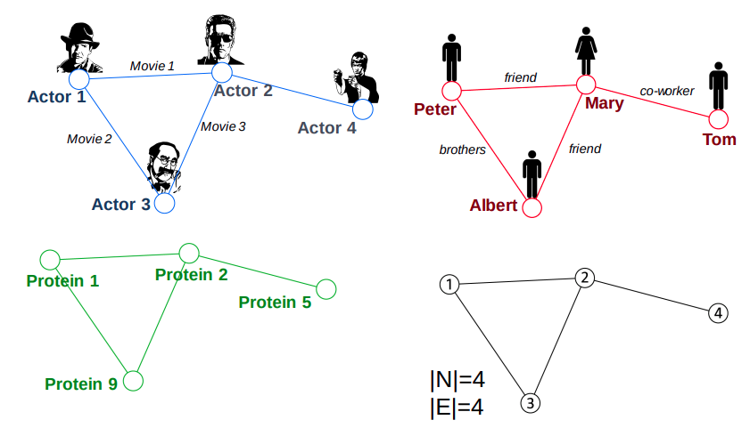
Graph theory basic
Để có thể hiểu sơ cua về networks và có thể giải quyết các task ML for graph thì ít nhất chúng ta cũng nên biết một số định nghĩa cơ bản trong graph theory phải hông?
Đầu tiên chúng ta cần phải nêu ra định nghĩa một graph: đồ thị G gồm một tập các object (được gọi là vertex - tập V) và giữa các object có tương tác với nhau (được gọi là edge - tập E) trong đó edge sẽ được assign một trọng số đại diện cho mức độ tương tác giữa hai vertex. Ký hiệu toán học: \(G = (V, E)\).
Có hai loại graph đó là directed graphs và undirected graphs:

Directed graphs là graph có edge liên kết giữa các vertex có quan tâm đến điểm đầu và cuối: ví dụ: phone calls, transactions, following on twitter or facebook
Trong khi đó: Undirected graphs là graph có edge liên kết giữa các vertex không quan tâm đến điểm đầu và cuối: ví dụ friendship on facebook.
Ngoài ra chúng ta còn có Heterogeneous graphs đó là graph được định nghĩa như sau: \(G = (V, E, R, T)\) Trong đó:
- \(v_i \in V:\) Là tập vertex của đồ thị đại diện cho các object
- \(r \in R:\) loại liên kết
- \(T(v_i):\) loại của đỉnh \(v_i\)
- \((v_i, r, v_j) \in E:\) cạnh kết nối giữa \(v_i , v_j\) với loại liên kết \(r\).
Một số ví dụ về Heterogeneous graphs:
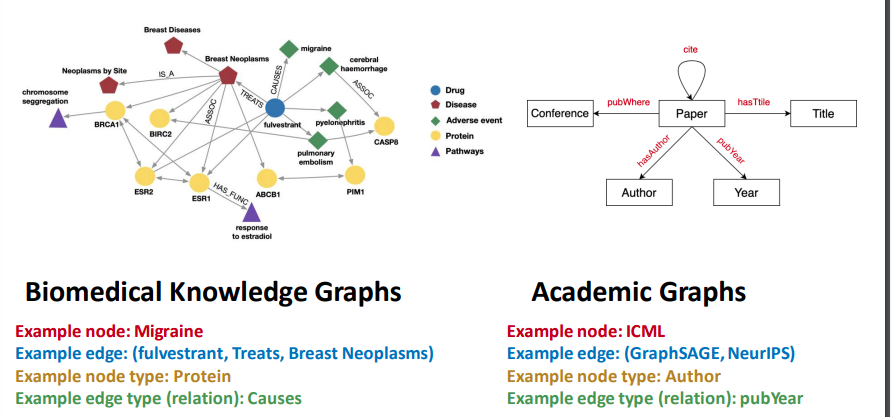
Node degree:
Tương ứng với directed graphs hay undirected graphs chúng ta sẽ có các xác định bậc của mỗi node khác nhau:
Undirected graphs: Bậc của đỉnh là số cạnh kết nối của đỉnh đó (số đỉnh có tương tác với đỉnh đó). Ví dụ: Bậc của đỉnh A: \(k_A = 4\)
Bậc trung bình của đỉnh thuộc graph \(Avg.degree: \bar{k} =
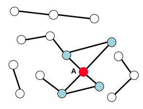
Directed graphs: Chúng ta sẽ định nghĩa bậc vào của đỉnh và bậc ra của đỉnh vì nó phụ thuộc vào cạnh có hướng
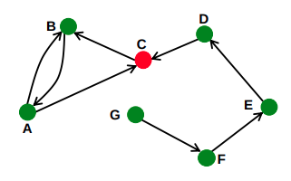
\(\text{Bậc vào của đỉnh C: }k_C^{in} = 2 \text{ ; Bậc ra của đỉnh C: } k_C^{out}=1 => \text{Bậc của C: } k_C=3\)
Bậc trung bình của đỉnh thuộc graph: \(\text{Avg.degree: }\bar{k^{in}} = \bar{k^{out}} = \frac{E}{N}\)
Bipartite Graph: là graph mà các node có thể chia làm hai tập riêng biệt U và V đặc biệt các cạnh kết nối là liên kết từ một node thuộc tập U đến một node thuộc tập V ( U và V là hai tập độc lập).
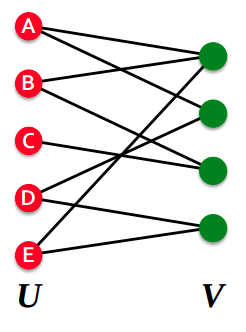
Example:
- Authors-to-Papers (they authored)
- Actors-to-Movies (they appeared in)
- Users-to-Movies (they rated)
- Recipes-to-Ingredients (they contain)
Đối với các Bipartite graph chúng ta có thể chuyển đổi thành “Folded/Projected Bipartite Graphs” như sau:
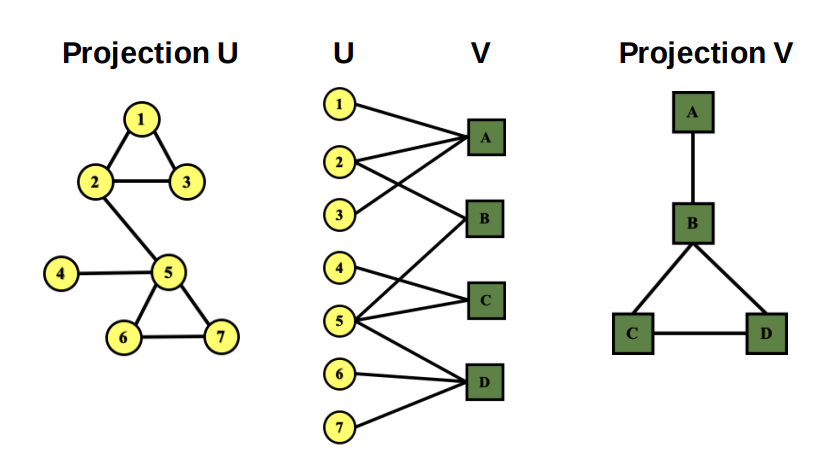
Representing Graphs: Adjacency Matrix:
Adjacency Matrix là ma trận thể hiện mối quan hệ và mức độ tương tác giữa các đỉnh trong graph. Ta sẽ chia làm hai loại Adj matrix:
Thứ nhất là các graph không có trọng số (binary matrix) là các đồ thị chỉ quan tâm giữa các đỉnh có tương tác với nhau hay không:
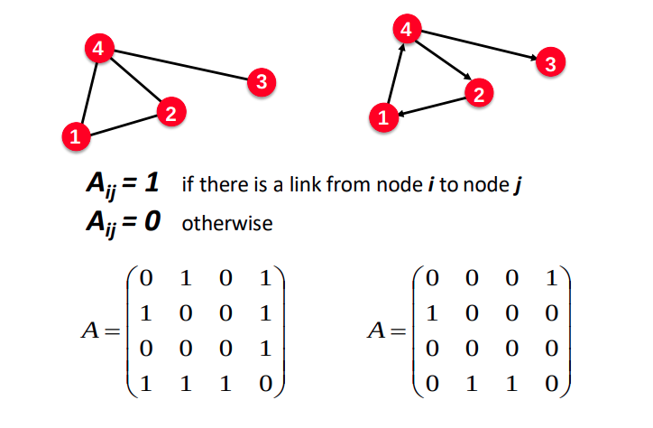
Thứ hai là các graph có trọng số: tức là giữa các đỉnh có tương tác thì trọng số cạnh thể hiện mức độ tương tác (khoảng cách, số lượt like, ….)
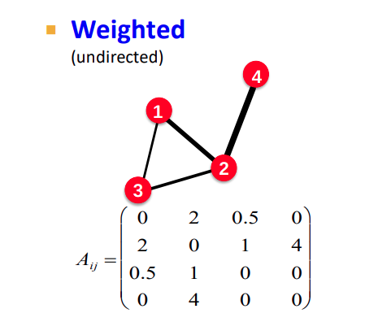
Representing Graphs: Edge list: Đại diện của graph là một list các cạnh liên kết:
Example:
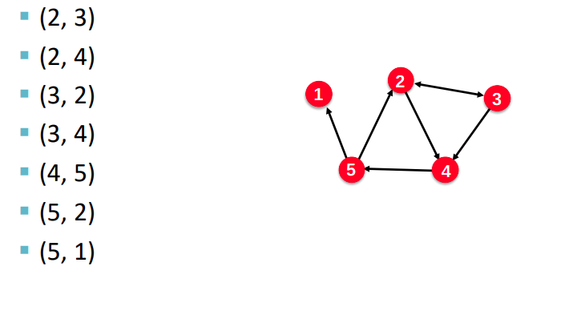
Representing Graphs: adjacency list:
- Thích hợp dùng cho các network lớn và thưa thớt
Cho Phép chúng ta lưu trữ theo từng node và các hàng xóm của nó (các node có cạnh nối với nó)
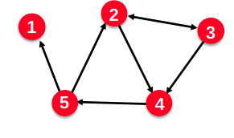
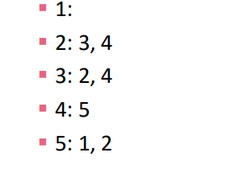
Mốt số Networks thực tế retrieve
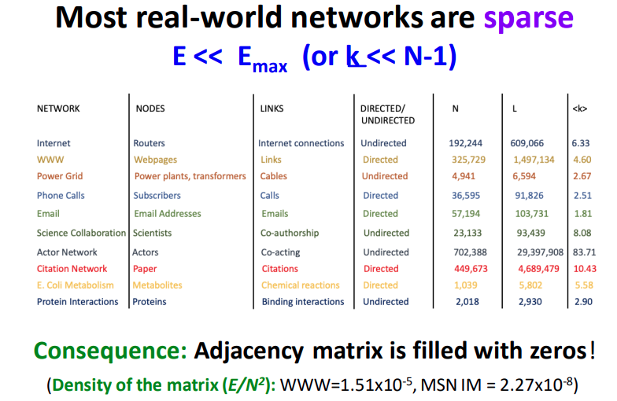
Node and Edges Attributes
- Weight: (eg: frequency of communication)
- Ranking (best friend, second best friend,…)
- Type (friend, relative, co-worker…)
- sign: Friend-Foe, Trust-Distrust
- Properties depending on the structure of the rest of the graph: Number of common friends
Connectivity of Undirected Graphs (Đồ thị liên thông)
- Connected (undirected) Graph là đồ thị mà giữa hai đỉnh bất kỳ luôn tồn tại đường đi giữa chúng (Đồ thị không liên thông là đồ thì có nhiều hơn một thành phần liên thông)
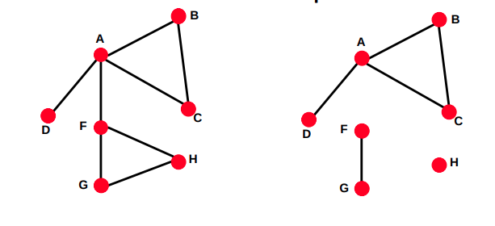
Adjacency matrix của một network có nhiều hơn một thành phần liên thông thì sẽ tạo thành các khối nằm trên đường chéo chính.

Đối với đồ thị có hướng chúng ta phân ra làm đồ thị liên thông mạnh (Strong connected directed graph) và đồ thị liên thông yếu (Weakly connected directed graph).
- Strongly connected directed graph: là đồ thị mà giữa hai đỉnh luôn tồn tại đường đi giữa chúng (đường đi có hướng)
Weakly connected directed graph: là đồ thị mà giữa hai đỉnh của đồ thị luôn tồn tại đường đi giữa hai đỉnh (không xét đến hướng - coi cạnh là vô hướng)

Summary
- Different types of tasks:
- Node Level
- Edge level
- Graph level